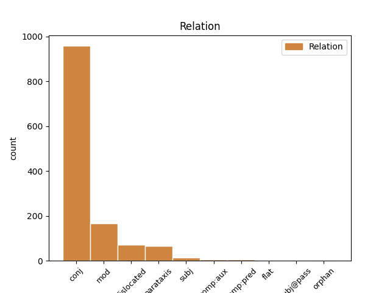
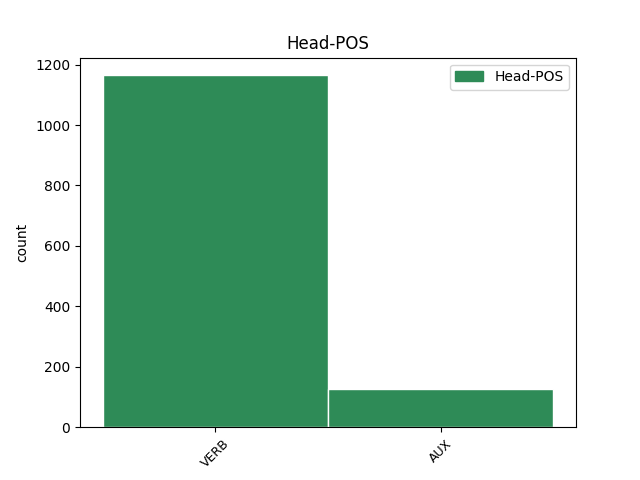
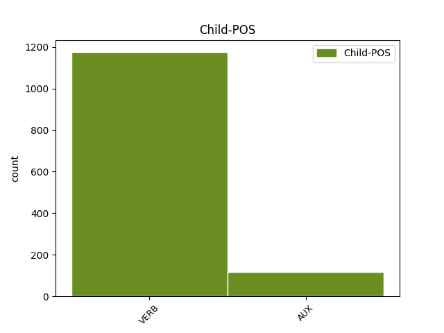

Distribution of features within this leaf



Agreement Rules sorted by frequency.
- When the dependent token is the conjunct(conj) of the head token,
1 Аже _ _ _ _ 0 _ _ _
2 соколъ _ _ _ _ 0 _ _ _
3 къ _ _ _ _ 0 _ _ _
4 гнѣзду _ _ _ _ 0 _ _ _
5 летитъ летѣти VERB V- Mood=Ind|Number=Sing|Person=3|Tense=Pres|VerbForm=Fin|Voice=Act 0 _ _ _
6 а _ _ _ _ 0 _ _ _
7 вѣ _ _ _ _ 0 _ _ _
8 соколца _ _ _ _ 0 _ _ _
9 опутаевѣ опутати VERB V- Mood=Ind|Number=Dual|Person=1|Tense=Pres|VerbForm=Fin|Voice=Act 5 conj _ ref=206
10 красною _ _ _ _ 0 _ _ _
11 дивицею _ _ _ _ 0 _ _ _
1 Коли _ _ _ _ 0 _ _ _
2 соколъ _ _ _ _ 0 _ _ _
3 въ _ _ _ _ 0 _ _ _
4 мытехъ _ _ _ _ 0 _ _ _
5 бываетъ бывати VERB V- Mood=Ind|Number=Sing|Person=3|Tense=Pres|VerbForm=Fin|Voice=Act 8 mod _ ref=118
6 высоко _ _ _ _ 0 _ _ _
7 птицъ _ _ _ _ 0 _ _ _
8 възбиваетъ възбивати VERB V- Mood=Ind|Number=Sing|Person=3|Tense=Pres|VerbForm=Fin|Voice=Act 0 _ _ _
1 Коли _ _ _ _ 0 _ _ _
2 Игорь _ _ _ _ 0 _ _ _
3 соколомъ _ _ _ _ 0 _ _ _
4 полетѣ полетѣти VERB V- Aspect=Perf|Mood=Ind|Number=Sing|Person=3|Tense=Past|VerbForm=Fin|Voice=Act 8 dislocated _ ref=191
5 тогда _ _ _ _ 0 _ _ _
6 Влуръ _ _ _ _ 0 _ _ _
7 влъкомъ _ _ _ _ 0 _ _ _
8 потече потещи VERB V- Aspect=Perf|Mood=Ind|Number=Sing|Person=3|Tense=Past|VerbForm=Fin|Voice=Act 0 _ _ _
9 труся _ _ _ _ 0 _ _ _
10 собою _ _ _ _ 0 _ _ _
11 студеную _ _ _ _ 0 _ _ _
12 росу _ _ _ _ 0 _ _ _
1 Полечю полетѣти VERB V- Mood=Ind|Number=Sing|Person=1|Tense=Pres|VerbForm=Fin|Voice=Act 0 _ _ _
2 рече рещи VERB V- Aspect=Perf|Mood=Ind|Number=Sing|Person=3|Tense=Past|VerbForm=Fin|Voice=Act 1 parataxis _ ref=169
3 зегзицею _ _ _ _ 0 _ _ _
4 по _ _ _ _ 0 _ _ _
5 Дунаеви _ _ _ _ 0 _ _ _
1 а _ _ _ _ 0 _ _ _
2 которыи _ _ _ _ 0 _ _ _
3 не _ _ _ _ 0 _ _ _
4 въсхотѧть въсхотѣти VERB V- Mood=Ind|Number=Plur|Person=3|Tense=Pres|VerbForm=Fin|Voice=Act 9 subj _ ref=299r4
5 изыти _ _ _ _ 0 _ _ _
6 изʼ _ _ _ _ 0 _ _ _
7 града _ _ _ _ 0 _ _ _
8 да _ _ _ _ 0 _ _ _
9 боудꙋть быти AUX V- Mood=Ind|Number=Plur|Person=3|Tense=Fut|VerbForm=Fin|Voice=Act 0 _ _ _
10 во _ _ _ _ 0 _ _ _
11 имени _ _ _ _ 0 _ _ _
12 моемъ _ _ _ _ 0 _ _ _
13 без _ _ _ _ 0 _ _ _
14 вреда _ _ _ _ 0 _ _ _
15 и _ _ _ _ 0 _ _ _
16 бес _ _ _ _ 0 _ _ _
17 печали _ _ _ _ 0 _ _ _
1 и _ _ _ _ 0 _ _ _
2 аще _ _ _ _ 0 _ _ _
3 не _ _ _ _ 0 _ _ _
4 бы _ _ _ _ 0 _ _ _
5 гсь _ _ _ _ 0 _ _ _
6 прекратил _ _ _ _ 0 _ _ _
7 д҃нь _ _ _ _ 0 _ _ _
8 тъ _ _ _ _ 0 _ _ _
9 то _ _ _ _ 0 _ _ _
10 и _ _ _ _ 0 _ _ _
11 конечнаѧ _ _ _ _ 0 _ _ _
12 бо _ _ _ _ 0 _ _ _
13 оуже _ _ _ _ 0 _ _ _
14 бѣ _ _ _ _ 0 _ _ _
15 погыбель _ _ _ _ 0 _ _ _
16 граду _ _ _ _ 0 _ _ _
17 понеже _ _ _ _ 0 _ _ _
18 гражане _ _ _ _ 0 _ _ _
19 вси _ _ _ _ 0 _ _ _
20 оуже _ _ _ _ 0 _ _ _
21 бѧхꙋ быти AUX V- Aspect=Imp|Mood=Ind|Number=Plur|Person=3|Tense=Past|VerbForm=Fin|Voice=Act 0 _ _ _
22 изнемогоша изнемощи VERB V- Aspect=Perf|Mood=Ind|Number=Plur|Person=3|Tense=Past|VerbForm=Fin|Voice=Act 21 comp:aux _ ref=295r7
1 тѣмь _ _ _ _ 0 _ _ _
2 же _ _ _ _ 0 _ _ _
3 ꙗкоже _ _ _ _ 0 _ _ _
4 се _ _ _ _ 0 _ _ _
5 любъвию _ _ _ _ 0 _ _ _
6 съдьрьжимъ _ _ _ _ 0 _ _ _
7 ѥже _ _ _ _ 0 _ _ _
8 къ _ _ _ _ 0 _ _ _
9 ст҃омѹ _ _ _ _ 0 _ _ _
10 томѹ _ _ _ _ 0 _ _ _
11 и _ _ _ _ 0 _ _ _
12 великомȣ _ _ _ _ 0 _ _ _
13 оц҃ю _ _ _ _ 0 _ _ _
14 нашемѹ _ _ _ _ 0 _ _ _
15 ѳеодосию _ _ _ _ 0 _ _ _
16 окѹсихъ окусити VERB V- Aspect=Perf|Mood=Ind|Number=Sing|Person=1|Tense=Past|VerbForm=Fin|Voice=Act 0 _ _ _
17 сѧ _ _ _ _ 0 _ _ _
18 и _ _ _ _ 0 _ _ _
19 ѿ _ _ _ _ 0 _ _ _
20 грѹбости _ _ _ _ 0 _ _ _
21 ср҃дцѧ _ _ _ _ 0 _ _ _
22 моѥго _ _ _ _ 0 _ _ _
23 ѥже _ _ _ _ 0 _ _ _
24 о _ _ _ _ 0 _ _ _
25 нѥмь _ _ _ _ 0 _ _ _
26 слышахъ слышати VERB V- Aspect=Perf|Mood=Ind|Number=Sing|Person=1|Tense=Past|VerbForm=Fin|Voice=Act 16 comp:pred _ ref=103
27 и _ _ _ _ 0 _ _ _
28 ѿ _ _ _ _ 0 _ _ _
29 многа _ _ _ _ 0 _ _ _
30 мала _ _ _ _ 0 _ _ _
31 въписахъ _ _ _ _ 0 _ _ _
32 на _ _ _ _ 0 _ _ _
33 славѹ _ _ _ _ 0 _ _ _
34 и _ _ _ _ 0 _ _ _
35 чьсть _ _ _ _ 0 _ _ _
36 великомѹ _ _ _ _ 0 _ _ _
37 б҃ѹ _ _ _ _ 0 _ _ _
38 и _ _ _ _ 0 _ _ _
39 сп҃сѹ _ _ _ _ 0 _ _ _
40 нашемѹ _ _ _ _ 0 _ _ _
41 іс҃у _ _ _ _ 0 _ _ _
42 х҃ѹ _ _ _ _ 0 _ _ _
43 съ _ _ _ _ 0 _ _ _
44 нимь _ _ _ _ 0 _ _ _
45 же _ _ _ _ 0 _ _ _
46 оц҃ю _ _ _ _ 0 _ _ _
47 слава _ _ _ _ 0 _ _ _
48 кѹпьно _ _ _ _ 0 _ _ _
49 и _ _ _ _ 0 _ _ _
50 съ _ _ _ _ 0 _ _ _
51 прѣст҃ыимь _ _ _ _ 0 _ _ _
52 дх҃ъмь _ _ _ _ 0 _ _ _
53 нынѣ _ _ _ _ 0 _ _ _
54 и _ _ _ _ 0 _ _ _
55 присно _ _ _ _ 0 _ _ _
56 и _ _ _ _ 0 _ _ _
57 въ _ _ _ _ 0 _ _ _
58 бесконьчьныꙗ _ _ _ _ 0 _ _ _
59 вѣкы _ _ _ _ 0 _ _ _
60 вѣкомъ _ _ _ _ 0 _ _ _
61 аминь _ _ _ _ 0 _ _ _
1 утръ утръгнути VERB V- Aspect=Perf|Mood=Ind|Number=Sing|Person=3|Tense=Past|VerbForm=Fin|Voice=Act 0 _ _ _
2 же же VERB V- Aspect=Perf|Mood=Ind|Number=Sing|Person=3|Tense=Past|VerbForm=Fin|Voice=Act 1 flat _ ref=156
3 воззни _ _ _ _ 0 _ _ _
4 с _ _ _ _ 0 _ _ _
5 три _ _ _ _ 0 _ _ _
6 кусы _ _ _ _ 0 _ _ _
1 кто _ _ _ _ 0 _ _ _
2 ѿстѹпить отъступити VERB V- Mood=Ind|Number=Sing|Person=3|Tense=Pres|VerbForm=Fin|Voice=Act 6 subj@pass _ ref=true
3 ѿ _ _ _ _ 0 _ _ _
4 николꙑ _ _ _ _ 0 _ _ _
5 да _ _ _ _ 0 _ _ _
6 бѹдеть быти AUX V- Mood=Ind|Number=Sing|Person=3|Tense=Fut|VerbForm=Fin|Voice=Act 0 _ _ _
7 проклѧтъ _ _ _ _ 0 _ _ _
1 се _ _ _ _ 0 _ _ _
2 бо _ _ _ _ 0 _ _ _
3 сего _ _ _ _ 0 _ _ _
4 ради _ _ _ _ 0 _ _ _
5 си _ _ _ _ 0 _ _ _
6 въписахъ _ _ _ _ 0 _ _ _
7 да _ _ _ _ 0 _ _ _
8 разѹмѣѥте _ _ _ _ 0 _ _ _
9 ꙗко _ _ _ _ 0 _ _ _
10 нѣсть _ _ _ _ 0 _ _ _
11 лѣпо _ _ _ _ 0 _ _ _
12 намъ _ _ _ _ 0 _ _ _
13 ни _ _ _ _ 0 _ _ _
14 въ _ _ _ _ 0 _ _ _
15 чемь _ _ _ _ 0 _ _ _
16 же _ _ _ _ 0 _ _ _
17 ослѹшати _ _ _ _ 0 _ _ _
18 сѧ _ _ _ _ 0 _ _ _
19 наставьника _ _ _ _ 0 _ _ _
20 игѹмена _ _ _ _ 0 _ _ _
21 своего _ _ _ _ 0 _ _ _
22 вѣдѹще _ _ _ _ 0 _ _ _
23 ꙗко _ _ _ _ 0 _ _ _
24 аще _ _ _ _ 0 _ _ _
25 чьто _ _ _ _ 0 _ _ _
26 ѹтаимъ утаити VERB V- Mood=Ind|Number=Plur|Person=1|Tense=Pres|VerbForm=Fin|Voice=Act 0 _ _ _
27 ѿ _ _ _ _ 0 _ _ _
28 нѥго _ _ _ _ 0 _ _ _
29 нъ _ _ _ _ 0 _ _ _
30 ѿ _ _ _ _ 0 _ _ _
31 б҃а _ _ _ _ 0 _ _ _
32 нѣсть не быти VERB V- Mood=Ind|Number=Sing|Person=3|Tense=Pres|VerbForm=Fin|Voice=Act 26 orphan _ ref=41
33 потаѥно _ _ _ _ 0 _ _ _
34 ничьтоже _ _ _ _ 0 _ _ _
Disagree Examples:
1 а _ _ _ _ 0 _ _ _
2 что _ _ _ _ 0 _ _ _
3 тобѣ _ _ _ _ 0 _ _ _
4 бꙋдет быти AUX V- Mood=Ind|Number=Sing|Person=3|Tense=Fut|VerbForm=Fin|Voice=Act 0 _ _ _
5 надобетъ _ _ _ _ 0 _ _ _
6 бѣ _ _ _ _ 0 _ _ _
7 ꙋ _ _ _ _ 0 _ _ _
8 менѧ _ _ _ _ 0 _ _ _
9 и _ _ _ _ 0 _ _ _
10 ты _ _ _ _ 0 _ _ _
11 ко _ _ _ _ 0 _ _ _
12 мнѣ _ _ _ _ 0 _ _ _
13 пришли присълати VERB V- Mood=Imp|Number=Sing|Person=2|Tense=Pres|VerbForm=Fin|Voice=Act 4 conj _ ref=4
14 и _ _ _ _ 0 _ _ _
15 ѧз _ _ _ _ 0 _ _ _
16 тобѣ _ _ _ _ 0 _ _ _
17 своемѹ _ _ _ _ 0 _ _ _
18 братѹ _ _ _ _ 0 _ _ _
19 за _ _ _ _ 0 _ _ _
20 то _ _ _ _ 0 _ _ _
21 не _ _ _ _ 0 _ _ _
22 стою _ _ _ _ 0 _ _ _
1 а _ _ _ _ 0 _ _ _
2 что _ _ _ _ 0 _ _ _
3 тобѣ _ _ _ _ 0 _ _ _
4 бꙋдет _ _ _ _ 0 _ _ _
5 надобетъ _ _ _ _ 0 _ _ _
6 бѣ _ _ _ _ 0 _ _ _
7 ꙋ _ _ _ _ 0 _ _ _
8 менѧ _ _ _ _ 0 _ _ _
9 и _ _ _ _ 0 _ _ _
10 ты _ _ _ _ 0 _ _ _
11 ко _ _ _ _ 0 _ _ _
12 мнѣ _ _ _ _ 0 _ _ _
13 пришли присълати VERB V- Mood=Imp|Number=Sing|Person=2|Tense=Pres|VerbForm=Fin|Voice=Act 0 _ _ _
14 и _ _ _ _ 0 _ _ _
15 ѧз _ _ _ _ 0 _ _ _
16 тобѣ _ _ _ _ 0 _ _ _
17 своемѹ _ _ _ _ 0 _ _ _
18 братѹ _ _ _ _ 0 _ _ _
19 за _ _ _ _ 0 _ _ _
20 то _ _ _ _ 0 _ _ _
21 не _ _ _ _ 0 _ _ _
22 стою стояти VERB V- Mood=Ind|Number=Sing|Person=1|Tense=Pres|VerbForm=Fin|Voice=Act 13 conj _ ref=4
1 и _ _ _ _ 0 _ _ _
2 жерепца _ _ _ _ 0 _ _ _
3 дам _ _ _ _ 0 _ _ _
4 да _ _ _ _ 0 _ _ _
5 тысѧчю _ _ _ _ 0 _ _ _
6 золотых _ _ _ _ 0 _ _ _
7 дам дати VERB V- Mood=Ind|Number=Sing|Person=1|Tense=Pres|VerbForm=Fin|Voice=Act 0 _ _ _
8 а _ _ _ _ 0 _ _ _
9 стань стати VERB V- Mood=Imp|Number=Sing|Person=2|Tense=Pres|VerbForm=Fin|Voice=Act 7 conj _ ref=7
10 в _ _ _ _ 0 _ _ _
11 вѣрѹ _ _ _ _ 0 _ _ _
12 нашѹ _ _ _ _ 0 _ _ _
13 в _ _ _ _ 0 _ _ _
14 махмѣт _ _ _ _ 0 _ _ _
15 дени _ _ _ _ 0 _ _ _
1 ино _ _ _ _ 0 _ _ _
2 братьѧ _ _ _ _ 0 _ _ _
3 рѹсьстїи _ _ _ _ 0 _ _ _
4 хрстиѧне _ _ _ _ 0 _ _ _
5 кто _ _ _ _ 0 _ _ _
6 хочеть хотѣти VERB V- Mood=Ind|Number=Sing|Person=3|Tense=Pres|VerbForm=Fin|Voice=Act 0 _ _ _
7 поити _ _ _ _ 0 _ _ _
8 в _ _ _ _ 0 _ _ _
9 ындѣискѹю _ _ _ _ 0 _ _ _
10 землю _ _ _ _ 0 _ _ _
11 и _ _ _ _ 0 _ _ _
12 ты _ _ _ _ 0 _ _ _
13 ѡстави оставити VERB V- Mood=Imp|Number=Sing|Person=2|Tense=Pres|VerbForm=Fin|Voice=Act 6 conj _ ref=7
14 вѣрѹ _ _ _ _ 0 _ _ _
15 свою _ _ _ _ 0 _ _ _
16 на _ _ _ _ 0 _ _ _
17 рѹси _ _ _ _ 0 _ _ _
1 погребъ _ _ _ _ 0 _ _ _
2 мѧ _ _ _ _ 0 _ _ _
3 иди ити VERB V- Mood=Imp|Number=Sing|Person=2|Tense=Pres|VerbForm=Fin|Voice=Act 0 _ _ _
4 же _ _ _ _ 0 _ _ _
5 яможе _ _ _ _ 0 _ _ _
6 хочеши хотѣти VERB V- Mood=Ind|Number=Sing|Person=2|Tense=Pres|VerbForm=Fin|Voice=Act 3 mod _ ref=68.1